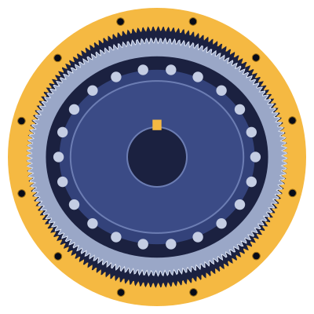

Why harmonic drives?
A harmonic drive (or strain-wave gear) uses an elliptical wave generator to flex a thin-walled flexspline against a rigid circular spline with slightly more teeth. Each turn of the input moves the output by only two teeth, which gives a large reduction in a small, light package.
For a telescope mount, this means:
- Near-zero backlash, so guiding corrections take effect immediately
- A high torque-to-weight ratio, so it can often run without counterweights
- A compact, co-axial layout that is easy to house and seal
- Single-stage 100:1 reduction, with no worm-gear meshing to adjust

The trade-off is periodic error. Strain-wave gears have a small error that repeats with each turn of the wave generator. The firmware includes optional periodic error correction (PEC), and in practice the error is easily handled by autoguiding.
Three variants
All three variants use the same design approach, controller board and firmware. They differ in gear size, motors and structure.

Mini
Portable, up to 5 kg.
Details →
Midi
All-rounder, up to 12 kg.
Details →
Maxi
Observatory, up to 25 kg.
Details →Comparison
| Mini | Midi | Maxi | |
|---|---|---|---|
| Harmonic drive | Size 14 strain-wave gear, 100:1 | Size 17 strain-wave gear, 100:1 | Size 25 strain-wave gear, 100:1 |
| Belt reduction | 2.5:1 (GT2 belt) | 3:1 (GT2 belt) | 4:1 (HTD 3M belt) |
| Total ratio | 250:1 | 300:1 | 400:1 |
| Motors | NEMA 14, 0.9° stepper | NEMA 17, 0.9° stepper | NEMA 17 high-torque, 0.9° stepper |
| Target payload | 5 kg | 12 kg | 25 kg |
| Head weight | ≈ 2.2 kg | ≈ 4.5 kg | ≈ 9 kg |
| Max slew | 4°/s | 3°/s | 2.5°/s |
| Saddle | Vixen-style dovetail | Dual Vixen / Losmandy | Losmandy D-style |
| Power | 12 V DC, 2 A | 12 V DC, 3 A | 24 V DC, 5 A |
| Approx. cost | ≈ £450 | ≈ £700 | ≈ £1,200 |
Design in progress. Figures on this page are design targets and will be updated with measured values as prototypes are built and tested.
System overview
The mount is controlled by an ESP32-based board running the DIY Astro firmware. On the PC, the ASCOM driver translates commands from imaging and planetarium software into the mount’s serial protocol, over USB or Wi-Fi.
Controller firmware
Tracking, GoTo, parking, limits, guiding and configuration.
Read more →ASCOM driver
Installation, setup and supported applications.
Read more →Project status
| Component | Status |
|---|---|
| Mechanical design — Mini | Prototype |
| Mechanical design — Midi | Design |
| Mechanical design — Maxi | Planned |
| Controller PCB | Prototype |
| Firmware | In development |
| ASCOM driver | In development |